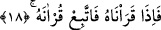
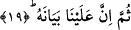

17. Şüphesiz onu, toplamak (senin kalbine yerleştirmek) ve onu okutmak bize
âiddir.
“Şüphesiz” Kur’an’ın mânâlarından hiçbirinin sana kapalı kalmayacağı biçimindeki
vaadimizin gereği olarak “onu” senin kalbinde “toplamak ve okutmak” yâni senin
dilinde okutmayı sağlamak “Bize âiddir.” Öyle ki sen dilediğin zaman Kur’an’ı
okuyabilirsin.
“Kur’an” kelimesi “kırâat/okumak” anlamına masdardır ve kelime bizim üzerinde
durduğumuz bu âyet-i kerîmede mef’ûlüne muzâaftır. “Kırâat” ise bir takım harfleri ve
kelimeleri bir araya getirip tertil içinde birbirine katmak demektir. Arapçada her
“toplama, bir araya getirme”ye “kırâat” denmez. Söz gelimi bir kimse belli bir kavmi
bir araya getirdiği zaman -Arapçada- “kara’tul kavme/kavmi bir araya getirdim”
denmez. Bu iş anlatılırken “karae” kökü kullanılmaz.
18. O hâlde, biz onu okuduğumuz zaman, sen onun okunuşunu takip et.
Kur’ân’ın kırâatini Cebrâil’in diliyle sana aktarıp tamamladığımız zaman sen de onu
okumaya başla.
Tefsirini yaptığımız bu son âyet-i kerîmede “kırâat/okuma” işinin “nûn-ı azamete”
yâni “biz” zamirine izâfe edilip “okuduğumuz” şekilde söylenmesi Peygamber (s.a.)
Efendimiz’in vahyi alırken teennî/yavaş ve yumuşak hareket etme noktasında mubâlaga
ifâde etmesi içindir.
“Onun okunuşuna uy” demek; Cebrâil okumasını bitirdikten sonra hiç ara
vermeksizin hemen okumaya başla” demektir.
İbn Abbas (r.a.) bu âyeti şöyle tefsir eder: Biz onu senin kalbinde topladığımız ve
oraya yerleştirdiğimiz zaman onunla amel et. Vâsıtî (rh.) ise âyette yer alan “Kur’an’ın
toplanması”nın gizlice, okunmasının ise alâniyyet anlamına geldiğini ifâde eder.
19. Sonra şüphen olmasın ki, onu açıklamak da bize âiddir.
Yâni Kur’an’ın mânâlarına ve hükümlerine dâir anlamakta zorluk çektiğin noktaları
açıklamak Bize âiddir.
Kapalı ve zor anlaşılan sözleri açıklayan şeye “beyân” denilir. Çünkü beyân
söylenilen sözdeki kasdedilen mânâyı ortaya çıkarır.
Âyette yer alan “sümme/sonra” kelimesi, beyânın -amel etmeye ihtiyaç vaktinden